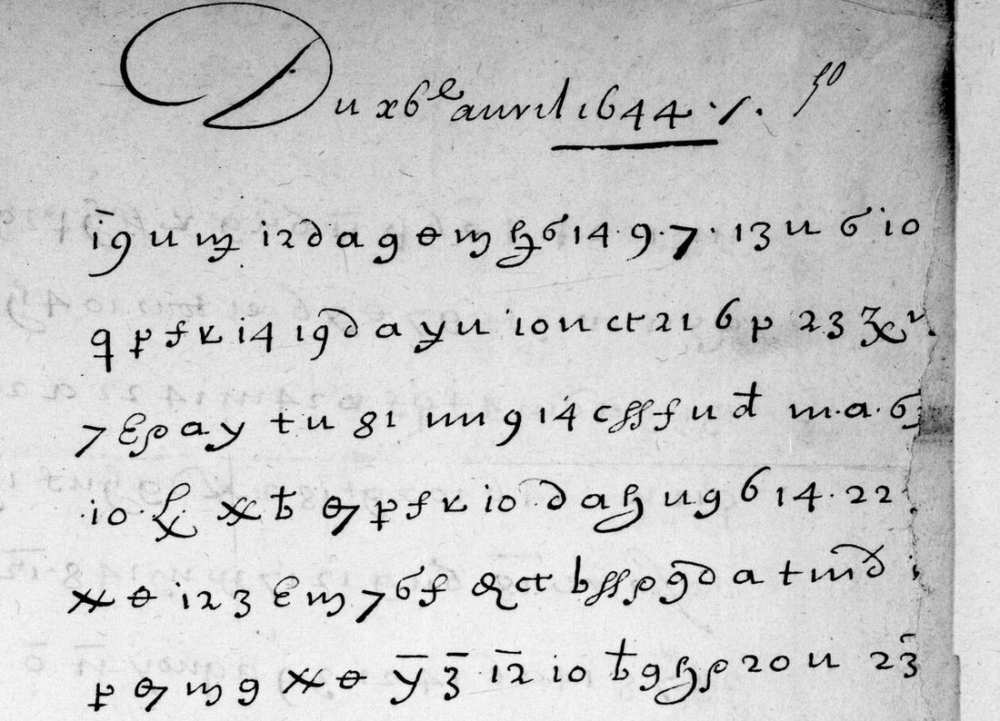
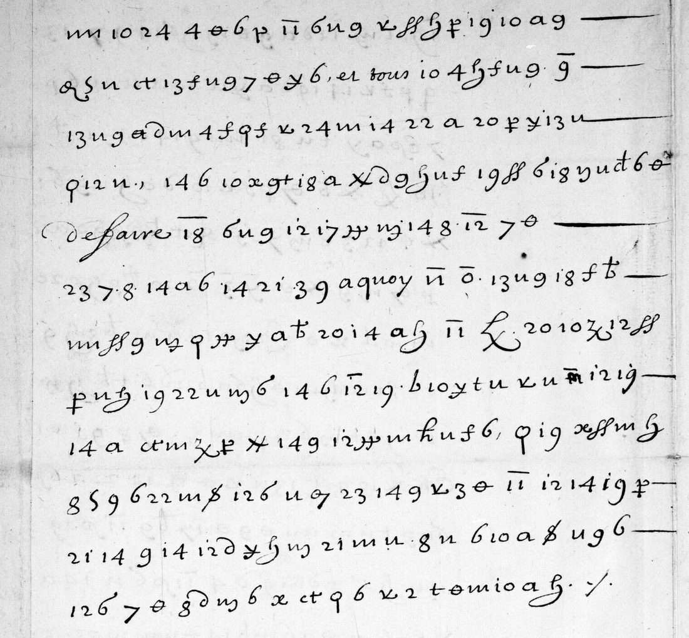

At a glanceKnown key applied, partial · 600 of 619 signs keep their key value
- The letter
- Michel Le Tellier, secretary of state for war, to Pierre de Marca, visitor general in Catalonia, from the court, 26 April 1644. Two pages of cipher, dated in clear.
- Where
- Bibliothèque nationale de France, Baluze 103 f. 50r–v (Gallica views 111–112); DECODE R2742, which gives the folio as f. 51–52.
- The cipher
- A homophonic alphabet of figures, letters and invented signs, with overlined figures for words and names (̅3 de La Motte, ̅32 Barcelone).
- How it was deciphered
- Satoshi Tomokiyo’s table of the 1644 cipher, checked and extended on the sister letter f. 230r against its period decipherment, applied to an AI transcription of the 32 lines.
- What it says
- Marca’s host is a friend of Marshal de La Motte, placed to learn what he writes; the Catalans’ packets are being opened, and the Queen wants it stopped.
- Still open
- Seven signs or code groups without a value, 18 of 32 lines that lean on context, and no human check of the transcription.
- Credit
- Reading by Harumi-Matsuba (issue #54, made with Claude and Codex); key by Satoshi Tomokiyo; an earlier partial draft by NoAutopilot.
01 The letter
Baluze 103 holds Pierre de Marca’s correspondence with Michel Le Tellier for 1644, the year Marca went to Barcelona as visitor general for the French crown. Five of Le Tellier’s letters are wholly or partly in cipher (ff. 50, 171, 189, 200, 230). Four have a decipherment made at the time on the leaf that follows. The letter of 26 April, f. 50, has none: the contributor looked at all 743 views of the volume, so the 1921 catalogue’s “avec traductions” holds for the other four only. Satoshi Tomokiyo, who rebuilt the cipher table from those four, lists f. 50 as the one letter with no contemporary decipherment.
f. 50r carries the date in clear (“Du 26e avril 1644”) and 20 lines of cipher; f. 50v another 12, with a few words in clear (et tous, de faire, a quoy). f. 51 is the address leaf, docketed by Marca’s office “receue le 3 may, resp. le 4 may”.

02 The cipher and the key
The 1644 cipher gives each letter several signs: figures 2–24 in roughly alphabetical order (10 a, 11 b, 12 c, 13 d, 14 e …), Latin letters standing for other letters (u e, a n, g s, t d), and invented shapes (θ e, ρ i, a barred y n). A bar changes a sign: plain y is g, barred y is n; an m with a barred tail is s, with a curled tail i. Overlined figures and letters are words and names: ̅9 pour, ̅11 que, ̅12 qui, ̅32 Barcelone, 39 Catalogne, ̅y Monsieur le Mareschal, ̅3 de La Motte, ̅11 ̅o la Reyne.
The contributor rewrote Tomokiyo’s table with sign names, then aligned 21 lines of the sister letter f. 230r with its period decipherment f. 232r: 412 of 424 signs fall on a key value. That alignment added values not in the table (R c, ff d beside a, 6 l beside t, ̅83 le Gouverneur). Three values come from f. 50 alone and are marked as inferred.
03 The reading
The contributor’s joined reading, with their marks: [ ] letters supplied, ⟨ ⟩ signs not read. Their line-by-line table, with a sure / doubtful mark per line, is in contributed/docs/READING.en.md.
Les conseillers de la [ville de] Barcelonne ayant ⟨p⟩ pris soing de faire preparer un l⟨σ⟩ a M. de Marca, ont esté ⟨22⟩ de choisir la maison d’un amy de M. le Mareschal de La Motte, qui a estimé ⟨23̂⟩ par ce moien estre in[formé ?] ponctuellement de tout ce que ledit sieur Marca fe[ra] ou dira, de ce que contiend[ront] les despesches qu’il rece[vra] de la Cour ou qu’il y envoy[e]r[a] ; dont [on] a estimé devoir inform[er] ledit S[ieur] Marca, affin qu’il prenne garde et ne se la[isse] pas persua[d]er par ⟨Ꝺ 22⟩. Celuy qui fait icy affai[res] de Barcelone s’est plaind plusie[urs] fois de ce que on ouvre ⟨‡‡⟩ de La Motte, ainsy qu’il pretend, tous les paquets que les Catalans luy adressent, et tous autres, pour descouvrir ce que on mande d’icy, et affin d’oster la liberté de faire ⟨̅18⟩ les choses qui se passent en Catalogne ; a quoy la Reyne desire passionnement que M. Marca ait l’oeil, et qu’il mande ce qu’il en aura descouvert. Il faut surtout qu’il empesche que cela ne se continue, si tant est qu’il se soit fait cy devant.
In English (the contributor’s gist): the councillors of Barcelona, preparing lodgings for Marca, chose the house of a friend of Marshal de La Motte, who reckoned he would so learn everything Marca does or says and what his despatches to and from the court contain; Marca is warned to be on his guard and not be talked round. Barcelona’s agent at court has complained several times that the packets the Catalans send him are opened [at?] La Motte’s, to find out what is written from court and to stop news of Catalonia passing freely. The Queen Regent wants Marca to watch this, report, and above all put an end to it. Marshal Philippe de La Motte-Houdancourt was then viceroy of Catalonia.

04 The checks
The contributor’s. A shuffled-key control: 0 of 1000 shuffles of the key’s values score as well as the real key, also with Tomokiyo’s table values only and on each AI transcription. A sixth, independent Codex transcription agrees with the final one on 568 of 626 sign names (90.7%). A blind calibration on f. 171r, lines 12–24, read with the same key and frozen before the period decipherment f. 172r was opened: 253 of 277 signs (91.3%) and 337 of 360 letters (93.6%).
Here (21 October 2026). With our own decoder and the project’s French model (fr-1600-letters), the bare key decode of f. 50 scores −2.49 per character against −5.09 for the median of 200 shuffled keys (best −4.50); the key is right. Aligning each line’s signs with the contributor’s line reading, 600 of 619 cipher signs (96.9%) carry a key value that stands in the reading; the rest is supplied by context. Nine lines (167 signs: f. 50r lines 1–3 and 17–20, f. 50v lines 1 and 12) were compared with the BnF image: the sign counts agree on every line and no sign reads differently, beyond the plain 6 against a small σ that the contributor already lists as undecided, and a cross with two bars before ̅3 on line 19 of f. 50r.
All of this is machine work. The transcription was made by Claude, cross-checked by Codex, and spot-checked here by Claude again. The calibration suggests about one sign in eleven may be misread, which the reading absorbs through context on 18 of the 32 lines; for that reason the decipherment counts as partial until a person reads the signs on the image.
05 What remains uncertain
- Symbols without a value: a plain p (f. 50r line 2), the sign closing line 3 (a logis?), the group 22 (line 4), a 23 with a hooked mark (line 6), Ꝺ 22 (line 16), the double-barred cross before ̅3 (line 19), and ̅18 (f. 50v line 5; sçavoir is a guess). None recurs in the four sister letters.
- Lines resting on context (the contributor’s “~”): f. 50r lines 2–7, 10–13, 15, 16, 19; f. 50v lines 5, 8, 10–12. Missing letters at line ends (fe[ra], rece[vra], in[formé]) look like the clerk’s omissions at the turn of the line.
- Unbarred “12 19” and “12 6” read as qu’il on f. 50v; the form is confirmed on f. 171r against its decipherment but is not in the key.
- Who “celuy qui fait icy affaires de Barcelone” was.
06 Sources
- BnF, Baluze 103, f. 50r–v, Gallica ark:/12148/btv1b9001389d, view 111 and view 112; sister letters ff. 171, 189, 200, 230 with decipherments ff. 172, 190, 205–206, 232 (views 366–368, 402, 424, 486–490).
- DECODE R2742 (this letter), R2743–R2746 (the sister letters).
- Satoshi Tomokiyo, “Le Tellier-Marca Cipher (1644)”, Cryptiana, louisxiv0.htm.
- Harumi-Matsuba, letellier1644-public (CC BY 4.0 data, MIT code), and issue #54, 20 October 2026.
- NoAutopilot, cipher-lab,
ciphers/baluze103-letellier-marca-1644/: a partial draft of f. 50 with Tomokiyo’s table (451 of 630 symbols given a value, parked 13 October 2026); some of its words (conseil, que ledit, descouvert, surtout) recur in the reading above. - Catalogue des manuscrits de la collection Baluze (Paris 1921), Baluze 103.
A different Le Tellier cipher, the letter to the Marquis de Castelnau of 1657, has its own notes in targets/letellier/.
The contributor’s key, transcription, reading, controls and calibration files, our re-measure (measure.py) and the notes are in targets/letellier1644/.